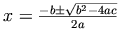

A distinguishing feature of mathematics is the use of a complex and highly evolved system of two-dimensional symbolic notation. As J. R. Pierce writes in his book on communication theory, mathematics and its notation should not be viewed as one and the same thing [Pierce1961]. Mathematical ideas can exist independently of the notation that represents them. However, the relation between meaning and notation is subtle, and part of the power of mathematics to describe and analyze derives from its ability to represent and manipulate ideas in symbolic form. The challenge before a Mathematical Markup Language (MathML) in enabling mathematics on the World Wide Web is to capture both notation and content (that is, its meaning) in such a way that documents can utilize the highly evolved notation of written and printed mathematics as well as the new potential for interconnectivity in electronic media.
Mathematical notation evolves constantly as people continue to innovate in ways of approaching and expressing ideas. Even the common notation of arithmetic has gone through an amazing variety of styles, including many defunct ones advocated by leading mathematical figures of their day [Cajori1928]. Modern mathematical notation is the product of centuries of refinement, and the notational conventions for high-quality typesetting are quite complicated and subtle. For example, variables and letters which stand for numbers are usually typeset today in a special mathematical italic font subtly distinct from the usual text italic; this seems to have been introduced in Europe in the late sixteenth century. Spacing around symbols for operations such as +, -, × and / is slightly different from that of text, to reflect conventions about operator precedence that have evolved over centuries. Entire books have been devoted to the conventions of mathematical typesetting, from the alignment of superscripts and subscripts, to rules for choosing parenthesis sizes, and on to specialized notational practices for subfields of mathematics. The manuals describing the nuances of present-day computer typesetting and composition systems can run to hundreds of pages.
Notational conventions in mathematics, and in printed text in general,
guide the eye and make printed expressions much easier to read and
understand. Though we usually take them for granted, we, as modern readers,
rely on
numerous conventions such as paragraphs, capital letters, font
families and cases, and even the device of decimal-like numbering of
sections such as is used in this document.
Such notational conventions are perhaps even more important
for electronic media, where one must contend with the difficulties of
on-screen reading. Appropriate standards coupled with computers
enable a broadening of access to mathematics beyond the world of
print. The markup methods for mathematics in use
just before the Web rose to prominence importantly included TEX
(also written TeX) [Knuth1986]
and approaches based on SGML ([AAP-math], [Poppelier1992] and [ISO-12083]).
It is remarkable how widespread the current conventions of mathematical notation have become. The general two-dimensional layout, and most of the same symbols, are used in all modern mathematical communications, whether the participants are, say, European, writing left-to-right, or Middle-Eastern, writing right-to-left. Of course, conventions for the symbols used, particularly those naming functions and variables, may tend to favor a local language and script. The largest variation from the most common is a form used in some Arabic-speaking communities which lays out the entire mathematical notation from right-to-left, roughly in mirror image of the European tradition.
However, there is more to putting mathematics on the Web than merely finding ways of displaying traditional mathematical notation in a Web browser. The Web represents a fundamental change in the underlying metaphor for knowledge storage, a change in which interconnection plays a central role. It has become important to find ways of communicating mathematics which facilitate automatic processing, searching and indexing, and reuse in other mathematical applications and contexts. With this advance in communication technology, there is an opportunity to expand our ability to represent, encode, and ultimately to communicate our mathematical insights and understanding with each other. We believe that MathML as specified below is an important step in developing mathematics on the Web.
MathML has been designed from the beginning with the following ultimate goals in mind.
MathML should ideally:
Encode mathematical material suitable for all educational and scientific communication.
Encode both mathematical notation and mathematical meaning.
Facilitate conversion to and from other mathematical formats, both presentational and semantic. Output formats should include:
graphical displays
speech synthesizers
input for computer algebra systems
other mathematics typesetting languages, such as TEX
plain text displays, e.g. VT100 emulators
international print media, including braille
It is recognized that conversion to and from other notational systems or media may entail loss of information in the process.
Allow the passing of information intended for specific renderers and applications.
Support efficient browsing of lengthy expressions.
Provide for extensibility.
Be well suited to templates and other common techniques for editing formulas.
Be legible to humans, and simple for software to generate and process.
No matter how successfully MathML achieves its goals as a markup language, it is clear that MathML is useful only if it is implemented well. The W3C Math Working Group has identified a short list of additional implementation goals. These goals attempt to describe concisely the minimal functionality MathML rendering and processing software should try to provide.
MathML expressions in HTML (and XHTML) pages should render properly in popular Web browsers, in accordance with reader and author viewing preferences, and at the highest quality possible given the capabilities of the platform.
HTML (and XHTML) documents containing MathML expressions should print properly and at high-quality printer resolutions.
MathML expressions in Web pages should be able to react to user gestures, such those as with a mouse, and to coordinate communication with other applications through the browser.
Mathematical expression editors and converters should be developed to facilitate the creation of Web pages containing MathML expressions.
The extent to which these goals are ultimately met depends on the cooperation and support of browser vendors and other developers. The W3C Math Working Group has continued to work with other working groups of the W3C, and outside the W3C, to ensure that the needs of the scientific community will be met. MathML 2 and its implementations showed considerable progress in this area over the situation that obtained at the time of the MathML 1.0 Recommendation (April 1998) [MathML1]. MathML3 and the developing Web are expected to allow much more.
MathML is a markup language for describing mathematics. It is usually expressed in XML syntax, although HTML and other syntaxes are possible. A special aspect of MathML is that there are two main strains of markup: Presentation markup, discussed in Chapter 3 Presentation Markup, is used to display mathematical expressions; and Content markup, discussed in Chapter 4 Content Markup, is used to convey mathematical meaning. Content markup is specified in particular detail. This specification makes use of an XML format called Content Dictionaries This format has been developed by the OpenMath Society, [OpenMath2004] with the dictionaries being used by this specification involving joint development by the OpenMath Society and the W3C Math Working Group.
Fundamentals common to both strains of markup are covered in Chapter 2 MathML Fundamentals, while the means for combining these strains, as well as external markup, into single MathML objects are discussed in Chapter 5 Mixing Markup Languages for Mathematical Expressions. How MathML interacts with applications is covered in Chapter 6 Interactions with the Host Environment. Finally, a discussion of special symbols, and issues regarding characters, entities and fonts, is given in Chapter 7 Characters, Entities and Fonts.
The quadratic formula provides a simple but instructive illustration of MathML markup.

MathML offers two flavors of markup of this formula. The first is the style which emphasizes the actual presentation of a formula, the two-dimensional layout in which the symbols are arranged. An example of this type is given just below. The second flavor emphasizes the mathematical content and an example of it follows the first one.
<mrow>
<mi>x</mi>
<mo>=</mo>
<mfrac>
<mrow>
<mrow>
<mo>-</mo>
<mi>b</mi>
</mrow>
<mo>±<!--plus-minus sign--></mo>
<msqrt>
<mrow>
<msup>
<mi>b</mi>
<mn>2</mn>
</msup>
<mo>-</mo>
<mrow>
<mn>4</mn>
<mo>⁢<!--invisible times--></mo>
<mi>a</mi>
<mo>⁢<!--invisible times--></mo>
<mi>c</mi>
</mrow>
</mrow>
</msqrt>
</mrow>
<mrow>
<mn>2</mn>
<mo>⁢<!--invisible times--></mo>
<mi>a</mi>
</mrow>
</mfrac>
</mrow>
Consider the superscript 2 in this formula. It represents the squaring operation here, but the meaning of a superscript in other situations depends on the context. A letter with a superscript can be used to signify a particular component of a vector, or maybe the superscript just labels a different type of some structure. Similarly two letters written one just after the other could signify two variables multiplied together, as they do in the quadratic formula, or they could be two letters making up the name of a single variable. What is called Content Markup in MathML allows closer specification of the mathematical meaning of many common formulas. The quadratic formula given in this style of markup is as follows.
<apply>
<eq/>
<ci>x</ci>
<apply>
<divide/>
<apply>
<plus/>
<apply>
<minus/>
<ci>b</ci>
</apply>
<apply>
<root/>
<apply>
<minus/>
<apply>
<power/>
<ci>b</ci>
<cn>2</cn>
</apply>
<apply>
<times/>
<cn>4</cn>
<ci>a</ci>
<ci>c</ci>
</apply>
</apply>
</apply>
</apply>
<apply>
<times/>
<cn>2</cn>
<ci>a</ci>
</apply>
</apply>
</apply>